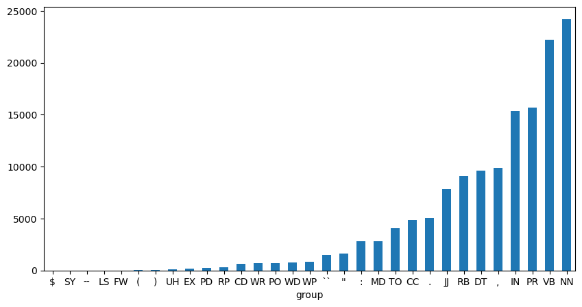
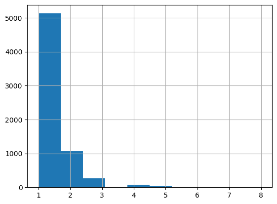

import configparserNLTK Parsers
Course: DS 5001
Module: 04 Lab
Topic: NLTK Parsers
Author: R.C. Alvarado
Date: 5 February 2022 (revised)Purpose: Demonstrate use of NLTK’s sentence and token parsers.
Set Up
Config
config = configparser.ConfigParser()
config.read("../env.ini")
data_dir = config['DEFAULT']['data_home']
output_dir = config['DEFAULT']['output_dir']src_file = f"{data_dir}/gutenberg/pg161.txt"
OHCO = ['chap_num', 'para_num', 'sent_num', 'token_num']import pandas as pd
import numpy as np
import seaborn as sns
import nltk
import renp.__version__'1.24.3'import scipy as sp
sp.__version__'1.11.3'Import file into a dataframe
We import our text from scratch in order to demonstrate the use of NLTKs model-driven parsers.
LINES = pd.DataFrame(open(src_file, 'r', encoding='utf-8-sig').readlines(), columns=['line_str'])
LINES.index.name = 'line_num'
LINES.line_str = LINES.line_str.str.replace(r'\n+', ' ', regex=True).str.strip()LINES.sample(20)| line_str | |
|---|---|
| line_num | |
| 5591 | Willoughby; and therefore was not more indispo... |
| 8022 | |
| 8453 | |
| 10899 | delightful in a woman one loves, she opened th... |
| 5175 | it was now a matter of unconcern whether she w... |
| 6662 | judged of their motives by the immediate effec... |
| 8545 | left the house, for your sister was sure SHE w... |
| 3219 | "I am convinced," said Edward, "that you reall... |
| 1592 | were talking of him together, "whom every body... |
| 7322 | day on which his existence could be continued ... |
| 7613 | attracted them; and they sympathised with each... |
| 4310 | have had no idea of it before; for I dare say ... |
| 2165 | very near relation. We will not say how near,... |
| 2499 | |
| 6610 | |
| 553 | |
| 11057 | |
| 9202 | |
| 8350 | them all into the fire, 'do not adopt either o... |
| 11016 | "No--to Combe Magna. I have business there; f... |
Clip Cruft
clip_pats = [
r"^\(1811\)",
r"^THE END"
]
line_a = 0
line_b = len(LINES)
try:
pat_a = LINES.line_str.str.match(clip_pats[0])
line_a = LINES.loc[pat_a].index[0] + 1
except:
print("pat_a not found")
try:
pat_b = LINES.line_str.str.match(clip_pats[1])
line_b = LINES.loc[pat_b].index[0] - 1
except:
print("pat_b not found")
LINES = LINES.loc[line_a : line_b]LINES.head()| line_str | |
|---|---|
| line_num | |
| 38 | |
| 39 | |
| 40 | |
| 41 | |
| 42 | CHAPTER 1 |
LINES.tail()| line_str | |
|---|---|
| line_num | |
| 12650 | within sight of each other, they could live wi... |
| 12651 | between themselves, or producing coolness betw... |
| 12652 | |
| 12653 | |
| 12654 |
Chunk Chapters
chap_pat = r"^\s*(CHAPTER)\s+\d+"
chap_lines = LINES.line_str.str.match(chap_pat, case=False)
LINES.loc[chap_lines, 'chap_num'] = [i+1 for i in range(LINES.loc[chap_lines].shape[0])]
LINES.chap_num = LINES.chap_num.ffill()
LINES = LINES.dropna(subset=['chap_num']) # Remove everything before Chapter 1
LINES = LINES.loc[~chap_lines] # Remove chapter heading lines; their work is done
LINES.chap_num = LINES.chap_num.astype('int') # Convert chap_num from float to intCHAPS = LINES.groupby(OHCO[:1]).line_str\
.apply(lambda x: '\n'.join(x))\
.str.strip()\
.to_frame('chap_str')CHAPS.head()| chap_str | |
|---|---|
| chap_num | |
| 1 | The family of Dashwood had long been settled i... |
| 2 | Mrs. John Dashwood now installed herself mistr... |
| 3 | Mrs. Dashwood remained at Norland several mont... |
| 4 | "What a pity it is, Elinor," said Marianne, "t... |
| 5 | No sooner was her answer dispatched, than Mrs.... |
Chunk Paragraphs
para_pat = r'\n\n+'
PARAS = CHAPS['chap_str'].str.split(para_pat, expand=True).stack()\
.to_frame('para_str').sort_index()
PARAS.index.names = OHCO[:2]
PARAS['para_str'] = PARAS['para_str'].str.replace(r'\n', ' ', regex=True)
PARAS['para_str'] = PARAS['para_str'].str.strip()
PARAS = PARAS[~PARAS['para_str'].str.match(r'^\s*$')] # Remove empty paragraphsPARAS.head()| para_str | ||
|---|---|---|
| chap_num | para_num | |
| 1 | 0 | The family of Dashwood had long been settled i... |
| 1 | By a former marriage, Mr. Henry Dashwood had o... | |
| 2 | The old gentleman died: his will was read, and... | |
| 3 | Mr. Dashwood's disappointment was, at first, s... | |
| 4 | His son was sent for as soon as his danger was... |
Use NLTK to Chunk Sentences and Parse Tokens
Import NLTK and download resources
If you need to install NLTK, see the instructions here. You can also install this with Anaconda, like so:
conda install nltk or conda install -c anaconda nltk (See https://anaconda.org/anaconda/nltk)
Once you have installed NLTK, you will need to download resources, which will happen when you run the following cell. If the interactive window opens, you may need to set your NLTK Data Directory, as described in the instructions here. To set the directory, click on the File menu and select Change Download Directory. For central installation, set this to C:\nltk_data (Windows),/usr/local/share/nltk_data (Mac), or /usr/share/nltk_data (Unix).
If you did not install the data to one of the above central locations, you will need to set the NLTK_DATA environment variable to specify the location of the data. (On a Windows machine, right click on “My Computer” then select Properties > Advanced > Environment Variables > User Variables > New…)
nltk_resources = [
'tokenizers/punkt',
'taggers/averaged_perceptron_tagger',
'corpora/stopwords',
'help/tagsets'
]for rsc in nltk_resources:
try:
nltk.data.find(rsc)
except IndexError:
nltk.download(rsc)If the above does not work, try going to the command line and download these resources from the interactive python shell.
Your session should look something like this:
$ ipython
Python 3.9.6 (default, Aug 18 2021, 19:38:01)
Type 'copyright', 'credits' or 'license' for more information
IPython 7.26.0 -- An enhanced Interactive Python. Type '?' for help.In [1]: import nltk
In [2]: nltk.download('averaged_perceptron_tagger')
[nltk_data] Downloading package averaged_perceptron_tagger to
[nltk_data] /home/rca2t/nltk_data...
[nltk_data] Unzipping taggers/averaged_perceptron_tagger.zip.
Out[2]: True
In [3]: nltk.download('tagsets')
[nltk_data] Downloading package tagsets to /home/rca2t/nltk_data...
[nltk_data] Unzipping help/tagsets.zip.
Out[3]: TrueDemonstrate nltk.sent_tokenize()
sample_para = PARAS.iloc[1].para_strsample_para"By a former marriage, Mr. Henry Dashwood had one son: by his present lady, three daughters. The son, a steady respectable young man, was amply provided for by the fortune of his mother, which had been large, and half of which devolved on him on his coming of age. By his own marriage, likewise, which happened soon afterwards, he added to his wealth. To him therefore the succession to the Norland estate was not so really important as to his sisters; for their fortune, independent of what might arise to them from their father's inheriting that property, could be but small. Their mother had nothing, and their father only seven thousand pounds in his own disposal; for the remaining moiety of his first wife's fortune was also secured to her child, and he had only a life-interest in it."nltk.sent_tokenize(sample_para)['By a former marriage, Mr. Henry Dashwood had one son: by his present lady, three daughters.',
'The son, a steady respectable young man, was amply provided for by the fortune of his mother, which had been large, and half of which devolved on him on his coming of age.',
'By his own marriage, likewise, which happened soon afterwards, he added to his wealth.',
"To him therefore the succession to the Norland estate was not so really important as to his sisters; for their fortune, independent of what might arise to them from their father's inheriting that property, could be but small.",
"Their mother had nothing, and their father only seven thousand pounds in his own disposal; for the remaining moiety of his first wife's fortune was also secured to her child, and he had only a life-interest in it."]Apply to PARAS dataframe
SENTS = PARAS.para_str.apply(lambda x: pd.Series(nltk.sent_tokenize(x)))\
.stack()\
.to_frame('sent_str')
SENTS.index.names = OHCO[:3]SENTS| sent_str | |||
|---|---|---|---|
| chap_num | para_num | sent_num | |
| 1 | 0 | 0 | The family of Dashwood had long been settled i... |
| 1 | Their estate was large, and their residence wa... | ||
| 2 | The late owner of this estate was a single man... | ||
| 3 | But her death, which happened ten years before... | ||
| 4 | In the society of his nephew and niece, and th... | ||
| ... | ... | ... | ... |
| 50 | 17 | 3 | He lived to exert, and frequently to enjoy him... |
| 4 | His wife was not always out of humour, nor his... | ||
| 18 | 0 | For Marianne, however--in spite of his incivil... | |
| 19 | 0 | Mrs. Dashwood was prudent enough to remain at ... | |
| 20 | 0 | Between Barton and Delaford, there was that co... |
4947 rows × 1 columns
Demonstrate nltk.word_tokenize()
sample_sent = SENTS.iloc[3].sent_strsample_sent'But her death, which happened ten years before his own, produced a great alteration in his home; for to supply her loss, he invited and received into his house the family of his nephew Mr. Henry Dashwood, the legal inheritor of the Norland estate, and the person to whom he intended to bequeath it.'sample_tokens = nltk.word_tokenize(sample_sent)print(sample_tokens)['But', 'her', 'death', ',', 'which', 'happened', 'ten', 'years', 'before', 'his', 'own', ',', 'produced', 'a', 'great', 'alteration', 'in', 'his', 'home', ';', 'for', 'to', 'supply', 'her', 'loss', ',', 'he', 'invited', 'and', 'received', 'into', 'his', 'house', 'the', 'family', 'of', 'his', 'nephew', 'Mr.', 'Henry', 'Dashwood', ',', 'the', 'legal', 'inheritor', 'of', 'the', 'Norland', 'estate', ',', 'and', 'the', 'person', 'to', 'whom', 'he', 'intended', 'to', 'bequeath', 'it', '.']Demostrate POS tagging
sample_tagged_tokens = nltk.pos_tag(nltk.word_tokenize(sample_sent))print(sample_tagged_tokens)[('But', 'CC'), ('her', 'PRP$'), ('death', 'NN'), (',', ','), ('which', 'WDT'), ('happened', 'VBD'), ('ten', 'CD'), ('years', 'NNS'), ('before', 'IN'), ('his', 'PRP$'), ('own', 'JJ'), (',', ','), ('produced', 'VBD'), ('a', 'DT'), ('great', 'JJ'), ('alteration', 'NN'), ('in', 'IN'), ('his', 'PRP$'), ('home', 'NN'), (';', ':'), ('for', 'IN'), ('to', 'TO'), ('supply', 'VB'), ('her', 'PRP$'), ('loss', 'NN'), (',', ','), ('he', 'PRP'), ('invited', 'VBD'), ('and', 'CC'), ('received', 'VBD'), ('into', 'IN'), ('his', 'PRP$'), ('house', 'NN'), ('the', 'DT'), ('family', 'NN'), ('of', 'IN'), ('his', 'PRP$'), ('nephew', 'JJ'), ('Mr.', 'NNP'), ('Henry', 'NNP'), ('Dashwood', 'NNP'), (',', ','), ('the', 'DT'), ('legal', 'JJ'), ('inheritor', 'NN'), ('of', 'IN'), ('the', 'DT'), ('Norland', 'NNP'), ('estate', 'NN'), (',', ','), ('and', 'CC'), ('the', 'DT'), ('person', 'NN'), ('to', 'TO'), ('whom', 'WP'), ('he', 'PRP'), ('intended', 'VBD'), ('to', 'TO'), ('bequeath', 'VB'), ('it', 'PRP'), ('.', '.')]Apply to SENTS dataframe
keep_whitespace = Trueif keep_whitespace:
TOKENS = SENTS.sent_str\
.apply(lambda x: pd.Series(nltk.pos_tag(nltk.word_tokenize(x))))\
.stack()\
.to_frame('pos_tuple')
else:
TOKENS = SENTS.sent_str\
.apply(lambda x: pd.Series(nltk.pos_tag(nltk.WhitespaceTokenizer().tokenize(x))))\
.stack()\
.to_frame('pos_tuple')TOKENS.index.names = OHCOTOKENS| pos_tuple | ||||
|---|---|---|---|---|
| chap_num | para_num | sent_num | token_num | |
| 1 | 0 | 0 | 0 | (The, DT) |
| 1 | (family, NN) | |||
| 2 | (of, IN) | |||
| 3 | (Dashwood, NNP) | |||
| 4 | (had, VBD) | |||
| ... | ... | ... | ... | ... |
| 50 | 20 | 0 | 64 | (coolness, NN) |
| 65 | (between, IN) | |||
| 66 | (their, PRP$) | |||
| 67 | (husbands, NNS) | |||
| 68 | (., .) |
141320 rows × 1 columns
TOKENS['pos'] = TOKENS.pos_tuple.apply(lambda x: x[1])
TOKENS['token_str'] = TOKENS.pos_tuple.apply(lambda x: x[0])
TOKENS['term_str'] = TOKENS.token_str.str.lower()TOKENS| pos_tuple | pos | token_str | term_str | ||||
|---|---|---|---|---|---|---|---|
| chap_num | para_num | sent_num | token_num | ||||
| 1 | 0 | 0 | 0 | (The, DT) | DT | The | the |
| 1 | (family, NN) | NN | family | family | |||
| 2 | (of, IN) | IN | of | of | |||
| 3 | (Dashwood, NNP) | NNP | Dashwood | dashwood | |||
| 4 | (had, VBD) | VBD | had | had | |||
| ... | ... | ... | ... | ... | ... | ... | ... |
| 50 | 20 | 0 | 64 | (coolness, NN) | NN | coolness | coolness |
| 65 | (between, IN) | IN | between | between | |||
| 66 | (their, PRP$) | PRP$ | their | their | |||
| 67 | (husbands, NNS) | NNS | husbands | husbands | |||
| 68 | (., .) | . | . | . |
141320 rows × 4 columns
Use NLTK to annotate TOKENS and VOCAB
Extract VOCAB
VOCAB = TOKENS.term_str.value_counts().to_frame('n')
VOCAB.index.name = 'term_str'
VOCAB['p'] = VOCAB.n / VOCAB.n.sum()
VOCAB['i'] = -np.log2(VOCAB.p)
VOCAB['n_chars'] = VOCAB.index.str.len()VOCAB| n | p | i | n_chars | |
|---|---|---|---|---|
| term_str | ||||
| , | 9900 | 0.070054 | 3.835393 | 1 |
| the | 4101 | 0.029019 | 5.106846 | 3 |
| to | 4101 | 0.029019 | 5.106846 | 2 |
| . | 4028 | 0.028503 | 5.132758 | 1 |
| of | 3571 | 0.025269 | 5.306494 | 2 |
| ... | ... | ... | ... | ... |
| festival | 1 | 0.000007 | 17.108606 | 8 |
| proclaim | 1 | 0.000007 | 17.108606 | 8 |
| spending | 1 | 0.000007 | 17.108606 | 8 |
| habitation | 1 | 0.000007 | 17.108606 | 10 |
| producing | 1 | 0.000007 | 17.108606 | 9 |
6586 rows × 4 columns
Add Max POS
TOKENS[['term_str','pos']].value_counts().sort_index().loc['love']pos
IN 1
NN 47
VB 18
VBP 10
Name: count, dtype: int64VOCAB['max_pos'] = TOKENS[['term_str','pos']].value_counts().unstack(fill_value=0).idxmax(1)VOCAB| n | p | i | n_chars | max_pos | |
|---|---|---|---|---|---|
| term_str | |||||
| , | 9900 | 0.070054 | 3.835393 | 1 | , |
| the | 4101 | 0.029019 | 5.106846 | 3 | DT |
| to | 4101 | 0.029019 | 5.106846 | 2 | TO |
| . | 4028 | 0.028503 | 5.132758 | 1 | . |
| of | 3571 | 0.025269 | 5.306494 | 2 | IN |
| ... | ... | ... | ... | ... | ... |
| festival | 1 | 0.000007 | 17.108606 | 8 | NN |
| proclaim | 1 | 0.000007 | 17.108606 | 8 | VB |
| spending | 1 | 0.000007 | 17.108606 | 8 | VBG |
| habitation | 1 | 0.000007 | 17.108606 | 10 | NN |
| producing | 1 | 0.000007 | 17.108606 | 9 | VBG |
6586 rows × 5 columns
The U Penn Tree Bank
Extract POS
Grab UPenn Codes
We get a text version of the UPenn Codes, or tag set, by calling nltk.help.upenn_tagset(). There is a script in data/misc that will generate this file for you, although a copy of it has already been generated. We use this to add a definition column to our table. This can be used later in visualizations, etc.
tags_csv = [(line.split()[0], ' '.join(line.split()[1:]))
for line in open(f'{data_dir}/misc/upenn_tagset.txt', 'r').readlines()]TOKENS| pos_tuple | pos | token_str | term_str | ||||
|---|---|---|---|---|---|---|---|
| chap_num | para_num | sent_num | token_num | ||||
| 1 | 0 | 0 | 0 | (The, DT) | DT | The | the |
| 1 | (family, NN) | NN | family | family | |||
| 2 | (of, IN) | IN | of | of | |||
| 3 | (Dashwood, NNP) | NNP | Dashwood | dashwood | |||
| 4 | (had, VBD) | VBD | had | had | |||
| ... | ... | ... | ... | ... | ... | ... | ... |
| 50 | 20 | 0 | 64 | (coolness, NN) | NN | coolness | coolness |
| 65 | (between, IN) | IN | between | between | |||
| 66 | (their, PRP$) | PRP$ | their | their | |||
| 67 | (husbands, NNS) | NNS | husbands | husbands | |||
| 68 | (., .) | . | . | . |
141320 rows × 4 columns
POS = pd.DataFrame(tags_csv)
POS.columns = ['pos_code','pos_def']
POS = POS.set_index('pos_code')
POS['n'] = TOKENS.pos.value_counts()
POS['n'] = POS['n'].fillna(0).astype('int')
POS['group'] = POS.apply(lambda x: x.name[:2], 1)
POS['punc'] = POS.apply(lambda x: bool(re.match(r"^\W", x.name)), 1)POS[POS.punc].index.to_list()['$', "''", '(', ')', ',', '--', '.', ':', '``']POS.groupby('group').n.sum().sort_values().plot.bar(figsize=(10,5), rot=0);
Compute POS ambiguity
TPM = TOKENS[['term_str','pos']].value_counts().unstack()VOCAB['n_pos'] = TPM.count(1)VOCAB.sort_values('n_pos')| n | p | i | n_chars | max_pos | n_pos | |
|---|---|---|---|---|---|---|
| term_str | ||||||
| , | 9900 | 0.070054 | 3.835393 | 1 | , | 1 |
| projects | 1 | 0.000007 | 17.108606 | 8 | NNS | 1 |
| latest | 1 | 0.000007 | 17.108606 | 6 | JJS | 1 |
| favour. | 1 | 0.000007 | 17.108606 | 7 | NN | 1 |
| hating | 1 | 0.000007 | 17.108606 | 6 | VBG | 1 |
| ... | ... | ... | ... | ... | ... | ... |
| round | 27 | 0.000191 | 12.353719 | 5 | NN | 7 |
| heard | 78 | 0.000552 | 10.823204 | 5 | VBN | 7 |
| half | 55 | 0.000389 | 11.327246 | 4 | PDT | 7 |
| till | 83 | 0.000587 | 10.733567 | 4 | VB | 8 |
| ma'am | 37 | 0.000262 | 11.899153 | 5 | NN | 8 |
6586 rows × 6 columns
VOCAB.n_pos.hist();
VOCAB.plot.scatter('n_chars', 'n_pos');
Extract Max POS
VOCAB['max_pos'] = TPM.idxmax(1)VOCAB| n | p | i | n_chars | max_pos | n_pos | |
|---|---|---|---|---|---|---|
| term_str | ||||||
| , | 9900 | 0.070054 | 3.835393 | 1 | , | 1 |
| the | 4101 | 0.029019 | 5.106846 | 3 | DT | 1 |
| to | 4101 | 0.029019 | 5.106846 | 2 | TO | 1 |
| . | 4028 | 0.028503 | 5.132758 | 1 | . | 1 |
| of | 3571 | 0.025269 | 5.306494 | 2 | IN | 1 |
| ... | ... | ... | ... | ... | ... | ... |
| festival | 1 | 0.000007 | 17.108606 | 8 | NN | 1 |
| proclaim | 1 | 0.000007 | 17.108606 | 8 | VB | 1 |
| spending | 1 | 0.000007 | 17.108606 | 8 | VBG | 1 |
| habitation | 1 | 0.000007 | 17.108606 | 10 | NN | 1 |
| producing | 1 | 0.000007 | 17.108606 | 9 | VBG | 1 |
6586 rows × 6 columns
Identify Stopwords
We use NLTK’s built in stopword list for English. Note that we can add and subtract from this list, or just create our own list and keep it in our data model.
sw = pd.DataFrame({'stop': 1}, index=nltk.corpus.stopwords.words('english'))
sw.index.name='term_str'sw.head()| stop | |
|---|---|
| term_str | |
| i | 1 |
| me | 1 |
| my | 1 |
| myself | 1 |
| we | 1 |
if 'stop' not in VOCAB.columns:
VOCAB = VOCAB.join(sw)
VOCAB['stop'] = VOCAB['stop'].fillna(0).astype('int')VOCAB| n | p | i | n_chars | max_pos | n_pos | stop | |
|---|---|---|---|---|---|---|---|
| term_str | |||||||
| , | 9900 | 0.070054 | 3.835393 | 1 | , | 1 | 0 |
| the | 4101 | 0.029019 | 5.106846 | 3 | DT | 1 | 1 |
| to | 4101 | 0.029019 | 5.106846 | 2 | TO | 1 | 1 |
| . | 4028 | 0.028503 | 5.132758 | 1 | . | 1 | 0 |
| of | 3571 | 0.025269 | 5.306494 | 2 | IN | 1 | 1 |
| ... | ... | ... | ... | ... | ... | ... | ... |
| festival | 1 | 0.000007 | 17.108606 | 8 | NN | 1 | 0 |
| proclaim | 1 | 0.000007 | 17.108606 | 8 | VB | 1 | 0 |
| spending | 1 | 0.000007 | 17.108606 | 8 | VBG | 1 | 0 |
| habitation | 1 | 0.000007 | 17.108606 | 10 | NN | 1 | 0 |
| producing | 1 | 0.000007 | 17.108606 | 9 | VBG | 1 | 0 |
6586 rows × 7 columns
Add Stems
from nltk.stem.porter import PorterStemmer
stemmer = PorterStemmer()
VOCAB['p_stem'] = VOCAB.apply(lambda x: stemmer.stem(x.name), 1)VOCAB| n | p | i | n_chars | max_pos | n_pos | stop | p_stem | |
|---|---|---|---|---|---|---|---|---|
| term_str | ||||||||
| , | 9900 | 0.070054 | 3.835393 | 1 | , | 1 | 0 | , |
| the | 4101 | 0.029019 | 5.106846 | 3 | DT | 1 | 1 | the |
| to | 4101 | 0.029019 | 5.106846 | 2 | TO | 1 | 1 | to |
| . | 4028 | 0.028503 | 5.132758 | 1 | . | 1 | 0 | . |
| of | 3571 | 0.025269 | 5.306494 | 2 | IN | 1 | 1 | of |
| ... | ... | ... | ... | ... | ... | ... | ... | ... |
| festival | 1 | 0.000007 | 17.108606 | 8 | NN | 1 | 0 | festiv |
| proclaim | 1 | 0.000007 | 17.108606 | 8 | VB | 1 | 0 | proclaim |
| spending | 1 | 0.000007 | 17.108606 | 8 | VBG | 1 | 0 | spend |
| habitation | 1 | 0.000007 | 17.108606 | 10 | NN | 1 | 0 | habit |
| producing | 1 | 0.000007 | 17.108606 | 9 | VBG | 1 | 0 | produc |
6586 rows × 8 columns
Summary
We took a source file and showed how to use NLTK’s tools to do intelligent parsing of sentences and tokens, and then to annotate the resulting TOKENS and VOCAB tables. We also created a POS table to capture information about pos usage in the corpus.
VOCAB.p_stem.value_counts().head(30)p_stem
respect 10
observ 8
continu 7
affect 7
admir 7
express 7
reason 7
possess 6
attend 6
suffer 6
prefer 6
allow 6
consider 6
present 6
comfort 6
depend 6
imagin 6
accept 6
perform 6
like 6
expect 6
live 6
anticip 5
attach 5
love 5
amus 5
reflect 5
answer 5
determin 5
care 5
Name: count, dtype: int64VOCAB[VOCAB.p_stem == 'present']| n | p | i | n_chars | max_pos | n_pos | stop | p_stem | |
|---|---|---|---|---|---|---|---|---|
| term_str | ||||||||
| present | 84 | 0.000594 | 10.716289 | 7 | JJ | 2 | 0 | present |
| presently | 8 | 0.000057 | 14.108606 | 9 | RB | 1 | 0 | present |
| presented | 5 | 0.000035 | 14.786678 | 9 | VBD | 2 | 0 | present |
| presentation | 3 | 0.000021 | 15.523644 | 12 | NN | 1 | 0 | present |
| presenting | 1 | 0.000007 | 17.108606 | 10 | VBG | 1 | 0 | present |
| presents | 1 | 0.000007 | 17.108606 | 8 | NNS | 1 | 0 | present |
VOCAB.loc['present']n 84
p 0.000594
i 10.716289
n_chars 7
max_pos JJ
n_pos 2
stop 0
p_stem present
Name: present, dtype: object